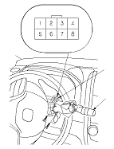
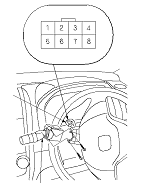
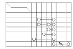
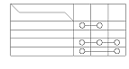

Wiper/Washer Switch Test/Replacement
Remove the steering column covers.
Disconnect the dashboard wire harness 8P connector (A) from the wiper/washer switch (B).
Remove the two screws, then slide out the wiper/washer switch.
Inspect the connector terminals to be sure they are all making good contact.
If the terminals are bent, loose or corroded, repair them as necessary, and recheck the system.
If the terminals look OK, go to
Step 5
.
LHD type include KE and KN models

RHD type except KE and KN models

Check for continuity between the terminals in each switch position according to the table.
If the continuity is not as specified, replace the switch.
Install the switch in the reverse order of removal.
Windshield

Rear Window
